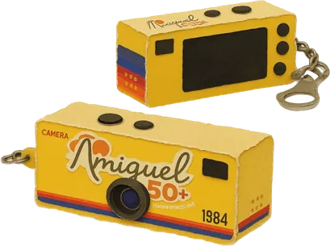
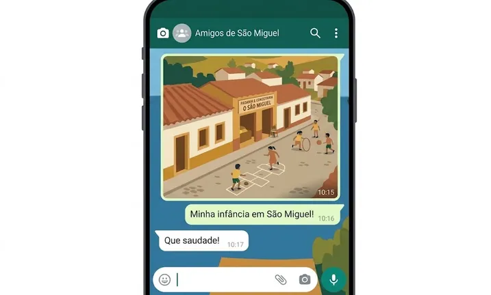

Eixo Eixo 01 MemóriaDe onde viemos?
Ação: Campanha de Histórias
Acervo de Memórias

Palavra:
Explore por palavra
As palavras destacadas nas lembranças levam a outras histórias que falam da mesma coisa.
Lembranças
Sua lembrança também conta
Uma cidade inteira tem histórias para contar, inclusive quem já morou aqui e hoje vive fora.
-
WhatsApp
Responda às perguntas por texto, áudio, foto ou vídeo.
-
Embaixadores
Estudantes ajudam a buscar histórias nas famílias e na comunidade.
-
Entrevistas
A equipe aprofunda algumas das histórias recebidas.
